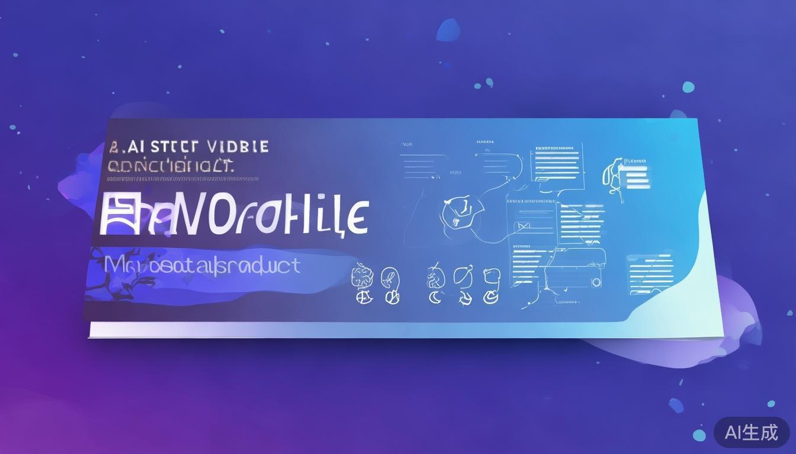

第 13 章 · AI创业指南：从想法到产品
AI降低了创业的门槛，但也提高了竞争的烈度。一个人+AI就能启动一家公司，但如何脱颖而出？本章给你一份实战指南。
AI创业的机会窗口
当前AI创业的三大机会：
- 垂直行业应用：AI+法律、AI+医疗、AI+教育，行业know-how+AI技术
- AI基础设施：模型优化、数据标注、Agent平台、开发工具
- AI原生应用：完全基于AI能力设计的新产品（如AI伴侣、AI创作工具）
MVP：最小可行产品

AI创业的核心原则：快速验证，小步迭代。
- 找到痛点：AI能解决什么真实问题？
- 设计MVP：用最小成本验证核心假设
- 快速上线：1-2周内推出可测试的版本
- 收集反馈：真实用户的使用数据比任何调研都重要
- 快速迭代：根据反馈每周更新
技术选型
AI创业的技术栈选择：
- 模型层：用现成API（DeepSeek/OpenAI）还是自研模型？初期建议用API，快速验证
- 应用层：Web应用（Next.js/React）还是移动应用（Flutter/React Native）？根据目标用户选择
- 数据层：如何收集和利用数据？数据是AI公司的核心资产
- 部署层：云服务（AWS/阿里云）还是自建？初期建议云服务
商业模式
AI创业的常见商业模式：
- SaaS订阅：按月/年收费，如Notion AI、Grammarly
- 按量付费：按API调用次数收费，如OpenAI API
- freemium：基础功能免费，高级功能付费
- 定制服务：为企业定制AI解决方案，客单价高但难规模化
- 平台模式：连接供需双方，如AI模型市场
融资与增长
- bootstrapping：自筹资金，保持控制权，适合现金流好的模式
- 天使投资：早期融资，验证商业模式
- VC融资：快速扩张，但需要高速增长
- 收入再投资：用收入驱动增长，最健康但最慢
避坑指南
- 不要追逐技术热点：解决真实问题比用最新技术更重要
- 不要忽视合规：AI涉及数据隐私、内容审核，合规是生死线
- 不要低估竞争：AI创业门槛降低意味着竞争更激烈
- 不要忽视用户教育：很多AI产品失败是因为用户不知道怎么用
本章要点
- AI创业的核心：找到真实痛点，快速验证，小步迭代
- 初期建议用现成API，聚焦产品和用户
- 商业模式要清晰，合规要前置
- AI降低了创业门槛，但成功依然需要执行力
出处声明
本文由本站 AI 创作整理，内容基于公开知识/官方资料提炼，信息请以官方发布为准； 涉及的历史事件、产品与数据均可在公开渠道查证，本站不编造来源。引用外部内容遵循其原始许可，标注出处即可。